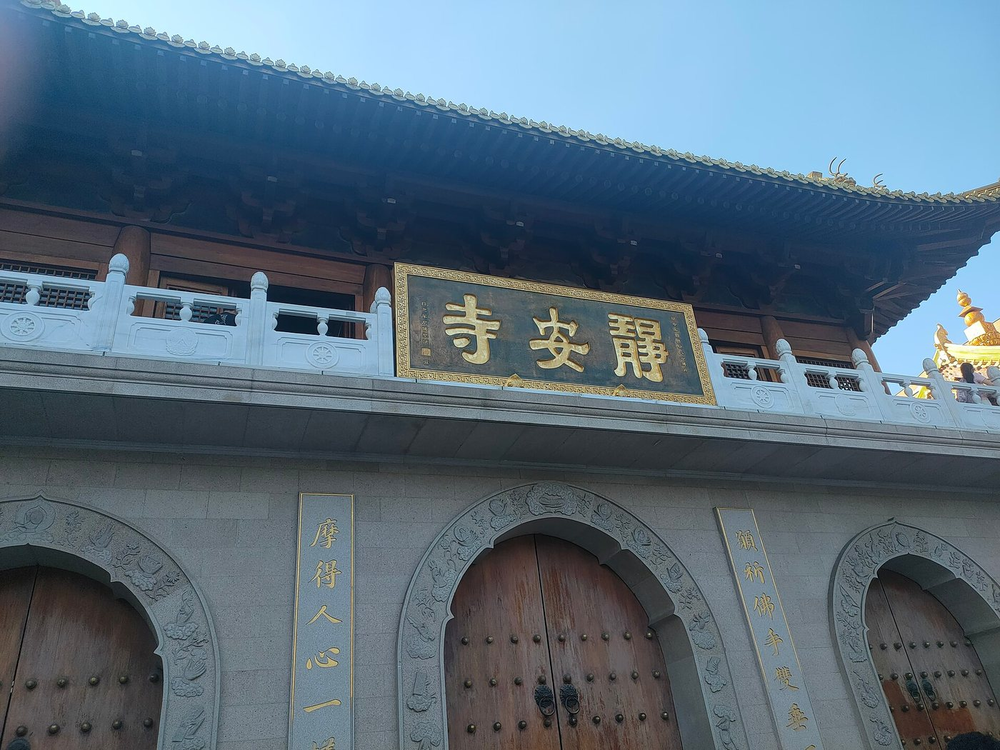

Jing'an Temple and its silver Buddha 静安寺
Working Buddhist temple · Jing’an
UnconfirmedHours from guides only · 18 Nov 2026
Go for the silver Buddha and gold roofs among the malls; most of it was rebuilt from the 1980s. Guides say CNY 50.
Hours from guides only
The evidence for this one is little, weak or old. Treat it as a lead, not a plan, and have a second choice ready.
Why it matters
A working Buddhist temple among the malls of West Nanjing Road, worth an hour for the gold roofs and the silver Buddha but less so for old buildings. Tradition dates it to 247 AD at an earlier site on the north bank of the Wusong River; it took the name Jing'an in 1008 and moved here in 1216. Fighting in 1860, the Cultural Revolution and a 1972 fire in the main hall took most of the old temple; what stands was rebuilt between the 1980s and 2010.
What to see
The gate on West Nanjing Road doubles as the Heavenly King Hall (天王殿); the Great Hall (大雄宝殿) behind it holds the silver Buddha, a 15-tonne statue cast in pure silver. Muni Hall has a 3.87 m jade Shakyamuni and Guanyin Hall a 6.2 m camphor-wood Guanyin.
How to get there
Show: 请带我去静安寺，南京西路1686号。 Do not mix it up with 玉佛寺, the Jade Buddha Temple. Buy the ticket at the entrance on West Nanjing Road. The gate hall has three steep stone steps without a handrail, and the halls have high wooden thresholds: step over, not on.
Local tip
For the picture of gold roofs against the towers, the pavement outside is free; pay the CNY 50 only to walk the halls and see the silver Buddha.
Watch out
Guides disagree on photography in the halls (two say none, one bans only flash). The upper floor has no lift.
What was checked, and what was not
Read on 18 Nov 2026
Sources read 18 Nov 2026: Shanghai Daily via the Shanghai Information Office (10 Jun 2024); Chinese and English Wikipedia; Shanghai Bendibao, a Ctrip travel note (Dec 2024), a luggage-service guide (18 Jul 2025) and two 2026 guides (27 Aug and 2 Sep) for hours and price; OpenStreetMap.
Not checked
Hours, price and entry rules from the temple itself (it publishes on WeChat), so allow for a change at the gate; a passport or booking rule for foreign visitors; discounts.
Sources
- Shanghai Daily via Shanghai Information Office, 10 Jun 2024: Jing'an Temple historyen.shio.gov.cn Opens in a new tab
- Chinese Wikipedia: 静安寺 (dates, halls, objects, coordinates)zh.wikipedia.org Opens in a new tab
- English Wikipedia: Jing'an Temple (Tangmi, silver Buddha 2009, pagoda 2010, hours)en.wikipedia.org Opens in a new tab
- English Wikipedia: Jing'an Temple station (Lines 2, 7, 14)en.wikipedia.org Opens in a new tab
- OpenStreetMap: Jing'an Temple precinct (map position and entrances)openstreetmap.org Opens in a new tab
- Temple site shjas.org (landing page with WeChat link)shjas.org Opens in a new tab
- Wander in China: Jing'an Temple guide, page dated 27 Aug 2026 (hours, ticket, rules)wanderinchina.com Opens in a new tab
- China for Travelers: Jing'an Temple guide, updated 2 Sep 2026chinafortravelers.com Opens in a new tab
- Shanghai Bendibao: 静安寺 page (ticket, hours, address)sh.bendibao.com Opens in a new tab
- Ctrip travel note, Dec 2024 (ticket, hours, layout, lights)gs.ctrip.com Opens in a new tab
- Sohu, luggage-service guide, 18 Jul 2025 (photography, ticket, discounts)sohu.com Opens in a new tab